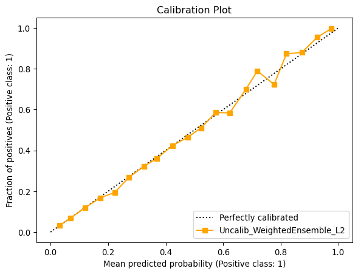
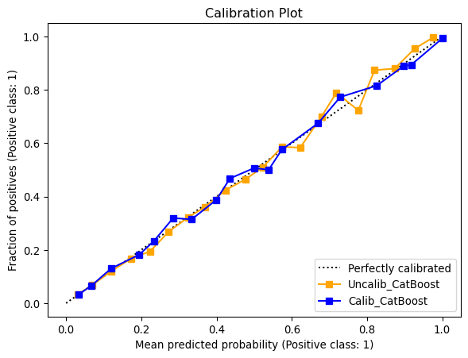

# System utilitiesimport osimport shutilimport randomimport sysCPU_LIMIT =2os.environ['OMP_NUM_THREADS'] =str(CPU_LIMIT)os.environ['OPENBLAS_NUM_THREADS'] =str(CPU_LIMIT)os.environ['MKL_NUM_THREADS'] =str(CPU_LIMIT)os.environ['VECLIB_MAXIMUM_THREADS'] =str(CPU_LIMIT)os.environ['NUMEXPR_NUM_THREADS'] =str(CPU_LIMIT)import torchimport numpy as npimport psutilfrom pathlib import Pathsys.path.insert(0, str(Path.cwd().parent))# Cap CPU usage during rendering to reduce memory pressure.num_jobs = CPU_LIMITtorch.set_num_threads(num_jobs)# Data manipulation and visualizationimport duckdbimport pandas as pdimport matplotlib.pyplot as plt# Machine learning - scikit-learnfrom sklearn.base import BaseEstimator, ClassifierMixin, TransformerMixinfrom sklearn.utils.validation import check_is_fitted, check_X_y, check_arrayfrom sklearn.model_selection import train_test_splitfrom sklearn.pipeline import Pipelinefrom sklearn.preprocessing import FunctionTransformer, OrdinalEncoderfrom sklearn.calibration import CalibrationDisplay, CalibratedClassifierCVfrom sklearn.feature_selection import SelectKBest, SelectFromModel, SequentialFeatureSelector, mutual_info_classiffrom sklearn.inspection import PartialDependenceDisplayfrom sklearn.compose import make_column_transformer, make_column_selectorfrom sklearn.ensemble import ExtraTreesClassifierfrom sklearn import set_config# Specialized ML librariesfrom autogluon.tabular import TabularPredictor, TabularDatasetfrom ydata_profiling import ProfileReportfrom scikitplot.metrics import plot_cumulative_gain, plot_lift_curvefrom PyALE import ale# Helper functions from course_utils.helpersfrom course_utils.helpers import ( global_set_seed, remove_ag_folder, AutoGluonSklearnWrapper, show_pdp, show_ale)
2 Read Data
Text and CSV files are common data formats in universities. However, in companies, data is often stored in databases (like SQL Server, PostgreSQL, Snowflake, or DataBricks).
In the lab, we will use the duckdb library to process data as if we were using a database.
The code loads two parquet files into tables:
prospects.parquet: Contains data about potential clients.
campaign_history.parquet: Contains data about past prescreening campaigns.
Code
tbl_prospects = duckdb.query(""" SELECT * FROM '../Data/cibil/prospects.parquet' """)tbl_campaign_history = duckdb.query(""" SELECT * FROM '../Data/cibil/campaign_history.parquet' """)
Show the column names from tbl_prospects and refer to the data dictionary (../Data/cibil/Data Dictionary.xlsx) for column definitions.
Code
duckdb.sql(""" SELECT column_name, column_type FROM (DESCRIBE SELECT * FROM tbl_prospects) """).show(max_rows=100)
Aggregate the tbl_campaign_history table to see how many prospects were targeted and responded to each campaign.
Code
duckdb.sql(""" SELECT campaign_id, COUNT(*) AS num_prospects, SUM(CASE WHEN direct_mail_flag = 'Y' THEN 1 ELSE 0 END) AS num_direct_mails, SUM(CASE WHEN response_flag = 1 THEN 1 ELSE 0 END) AS num_responses FROM tbl_campaign_history GROUP BY campaign_id ORDER BY campaign_id""").show()
Merge the tables (tbl_prospects and tbl_campaign_history) to create a new table (tbl_merged) that contains all columns from both tables. Use a left join to keep all rows from tbl_prospects.
Code
tbl_merged = duckdb.query(""" SELECT c.*, p.* FROM tbl_campaign_history AS c RIGHT JOIN tbl_prospects AS p ON p.prospectid = c.prospectid ORDER BY c.campaign_id, CAST(p.prospectid AS INT)""")
Convert tbl_merged to a Pandas DataFrame and display the first 5 rows.
display(f"Train data response rate: {df_campaign_1_train['response_flag'].mean()*100:.3f}%")display(f"Test data response rate: {df_campaign_1_test['response_flag'].mean()*100:.3f}%")
'Train data response rate: 5.739%'
'Test data response rate: 5.738%'
6 Exploratory Data Analysis
Use the ydata_profiling library to compare df_campaign_1_train and df_campaign_1_test.
The df_campaign_1_train and df_campaign_1_test data frames are very wide and the columns are highly collinear. We will subset the columns to make the data more manageable.
The code below trains multiple machine learning models using autogluon and evaluates them using the ROC AUC metric (on a validation set that is derived from train_data).
Hyperparameter tuning is set to medium_quality to reduce compute time. The allotted training time is set to 180 seconds. In real-world situations, you should use a better preset (good_quality) and a longer training time (3600).
Create a scikit-learn pipeline that replaces -99999 with -1 and trains autogluon models.
Verbosity: 2 (Standard Logging)
=================== System Info ===================
AutoGluon Version: 1.5.0
Python Version: 3.11.14
Operating System: Darwin
Platform Machine: arm64
Platform Version: Darwin Kernel Version 25.3.0: Wed Jan 28 20:54:46 PST 2026; root:xnu-12377.91.3~2/RELEASE_ARM64_T6000
CPU Count: 10
Pytorch Version: 2.9.1
CUDA Version: CUDA is not available
GPU Count: WARNING: Exception was raised when calculating GPU count (AssertionError)
Memory Avail: 14.65 GB / 32.00 GB (45.8%)
Disk Space Avail: 390.65 GB / 926.35 GB (42.2%)
===================================================
Presets specified: ['medium_quality']
Using hyperparameters preset: hyperparameters='default'
Beginning AutoGluon training ... Time limit = 270s
AutoGluon will save models to "/Users/williamchiu/GitHub/IML4Finance/Labs/Lab01_ag_models_NoTransform"
Train Data Rows: 268811
Train Data Columns: 5
Label Column: response_flag
Problem Type: binary
Preprocessing data ...
Selected class <--> label mapping: class 1 = 1, class 0 = 0
Using Feature Generators to preprocess the data ...
Fitting AutoMLPipelineFeatureGenerator...
Available Memory: 15015.94 MB
Train Data (Original) Memory Usage: 8.46 MB (0.1% of available memory)
Inferring data type of each feature based on column values. Set feature_metadata_in to manually specify special dtypes of the features.
Stage 1 Generators:
Fitting AsTypeFeatureGenerator...
Stage 2 Generators:
Fitting FillNaFeatureGenerator...
Stage 3 Generators:
Fitting IdentityFeatureGenerator...
Fitting CategoryFeatureGenerator...
Fitting CategoryMemoryMinimizeFeatureGenerator...
Stage 4 Generators:
Fitting DropUniqueFeatureGenerator...
Stage 5 Generators:
Fitting DropDuplicatesFeatureGenerator...
Types of features in original data (raw dtype, special dtypes):
('category', []) : 1 | ['last_prod_enq2']
('float', []) : 2 | ['CC_utilization', 'PL_utilization']
('int', []) : 2 | ['PL_enq_L6m', 'CC_enq_L6m']
Types of features in processed data (raw dtype, special dtypes):
('category', []) : 1 | ['last_prod_enq2']
('float', []) : 2 | ['CC_utilization', 'PL_utilization']
('int', []) : 2 | ['PL_enq_L6m', 'CC_enq_L6m']
0.2s = Fit runtime
5 features in original data used to generate 5 features in processed data.
Train Data (Processed) Memory Usage: 8.46 MB (0.1% of available memory)
Data preprocessing and feature engineering runtime = 0.24s ...
AutoGluon will gauge predictive performance using evaluation metric: 'roc_auc'
This metric expects predicted probabilities rather than predicted class labels, so you'll need to use predict_proba() instead of predict()
To change this, specify the eval_metric parameter of Predictor()
Automatically generating train/validation split with holdout_frac=0.2, Train Rows: 215048, Val Rows: 53763
User-specified model hyperparameters to be fit:
{
'NN_TORCH': [{}],
'GBM': [{'extra_trees': True, 'ag_args': {'name_suffix': 'XT'}}, {}, {'learning_rate': 0.03, 'num_leaves': 128, 'feature_fraction': 0.9, 'min_data_in_leaf': 3, 'ag_args': {'name_suffix': 'Large', 'priority': 0, 'hyperparameter_tune_kwargs': None}}],
'CAT': [{}],
'XGB': [{}],
'FASTAI': [{}],
'RF': [{'criterion': 'gini', 'ag_args': {'name_suffix': 'Gini', 'problem_types': ['binary', 'multiclass']}}, {'criterion': 'entropy', 'ag_args': {'name_suffix': 'Entr', 'problem_types': ['binary', 'multiclass']}}, {'criterion': 'squared_error', 'ag_args': {'name_suffix': 'MSE', 'problem_types': ['regression', 'quantile']}}],
'XT': [{'criterion': 'gini', 'ag_args': {'name_suffix': 'Gini', 'problem_types': ['binary', 'multiclass']}}, {'criterion': 'entropy', 'ag_args': {'name_suffix': 'Entr', 'problem_types': ['binary', 'multiclass']}}, {'criterion': 'squared_error', 'ag_args': {'name_suffix': 'MSE', 'problem_types': ['regression', 'quantile']}}],
}
Excluded models: [] (Specified by `excluded_model_types`)
Fitting 11 L1 models, fit_strategy="sequential" ...
Fitting model: LightGBMXT ... Training model for up to 269.76s of the 269.76s of remaining time.
Fitting with cpus=2, gpus=0, mem=0.1/14.6 GB
0.7172 = Validation score (roc_auc)
3.07s = Training runtime
0.39s = Validation runtime
Fitting model: LightGBM ... Training model for up to 266.28s of the 266.28s of remaining time.
Fitting with cpus=2, gpus=0, mem=0.1/14.7 GB
0.7184 = Validation score (roc_auc)
1.01s = Training runtime
0.08s = Validation runtime
Fitting model: RandomForestGini ... Training model for up to 265.19s of the 265.19s of remaining time.
Fitting with cpus=2, gpus=0, mem=1.0/14.7 GB
0.6713 = Validation score (roc_auc)
2.92s = Training runtime
0.15s = Validation runtime
Fitting model: RandomForestEntr ... Training model for up to 262.01s of the 262.01s of remaining time.
Fitting with cpus=2, gpus=0, mem=1.0/14.7 GB
0.6715 = Validation score (roc_auc)
2.9s = Training runtime
0.14s = Validation runtime
Fitting model: CatBoost ... Training model for up to 258.84s of the 258.84s of remaining time.
Fitting with cpus=2, gpus=0
Warning: Exception caused CatBoost to fail during training (ImportError)... Skipping this model.
Import catboost failed. Numpy version may be outdated, Please ensure numpy version >=1.17.0. If it is not, please try 'pip uninstall numpy -y; pip install numpy>=1.17.0' Detailed info: numpy.dtype size changed, may indicate binary incompatibility. Expected 96 from C header, got 88 from PyObject
Fitting model: ExtraTreesGini ... Training model for up to 258.69s of the 258.69s of remaining time.
Fitting with cpus=2, gpus=0, mem=1.0/14.7 GB
0.6716 = Validation score (roc_auc)
1.96s = Training runtime
0.15s = Validation runtime
Fitting model: ExtraTreesEntr ... Training model for up to 256.44s of the 256.44s of remaining time.
Fitting with cpus=2, gpus=0, mem=1.0/14.6 GB
0.6715 = Validation score (roc_auc)
2.01s = Training runtime
0.14s = Validation runtime
Fitting model: NeuralNetFastAI ... Training model for up to 254.13s of the 254.13s of remaining time.
Fitting with cpus=2, gpus=0, mem=0.1/14.8 GB
No improvement since epoch 9: early stopping
0.7168 = Validation score (roc_auc)
81.05s = Training runtime
0.17s = Validation runtime
Fitting model: XGBoost ... Training model for up to 172.86s of the 172.86s of remaining time.
Fitting with cpus=2, gpus=0
0.7167 = Validation score (roc_auc)
1.16s = Training runtime
0.04s = Validation runtime
Fitting model: NeuralNetTorch ... Training model for up to 171.65s of the 171.65s of remaining time.
Fitting with cpus=2, gpus=0, mem=0.0/14.8 GB
Ran out of time, stopping training early. (Stopping on epoch 33)
0.7181 = Validation score (roc_auc)
168.63s = Training runtime
0.16s = Validation runtime
Fitting model: LightGBMLarge ... Training model for up to 2.86s of the 2.86s of remaining time.
Fitting with cpus=2, gpus=0, mem=0.1/15.2 GB
0.7155 = Validation score (roc_auc)
2.09s = Training runtime
0.19s = Validation runtime
Fitting model: WeightedEnsemble_L2 ... Training model for up to 269.76s of the 0.54s of remaining time.
Fitting 1 model on all data | Fitting with cpus=2, gpus=0, mem=0.0/15.1 GB
Ensemble Weights: {'LightGBM': 0.688, 'NeuralNetTorch': 0.312}
0.719 = Validation score (roc_auc)
0.88s = Training runtime
0.0s = Validation runtime
AutoGluon training complete, total runtime = 270.42s ... Best model: WeightedEnsemble_L2 | Estimated inference throughput: 228591.0 rows/s (53763 batch size)
TabularPredictor saved. To load, use: predictor = TabularPredictor.load("/Users/williamchiu/GitHub/IML4Finance/Labs/Lab01_ag_models_NoTransform")
In a Jupyter environment, please rerun this cell to show the HTML representation or trust the notebook. On GitHub, the HTML representation is unable to render, please try loading this page with nbviewer.org.
Use the best model from the trained ensemble. Note: The model uses presets='medium_quality' which may not include CatBoost on all platforms.
Code
# Get the actual best model from the predictorbest_model_name = ag_model.named_steps['autogluon'].predictor.model_bestprint(f"Using best model: {best_model_name}")
Using best model: WeightedEnsemble_L2
11 Check Probability Calibration
Measure how well the model scores align with the observed response rates in test_data.
Code
%matplotlib inlinecal_disp = CalibrationDisplay.from_estimator( estimator = ag_model, X = test_data.drop(columns=[label]), y = test_data[label], n_bins =20, name =f'Uncalib_{best_model_name}', color ='orange' )cal_disp.ax_.set_title("Calibration Plot")
Text(0.5, 1.0, 'Calibration Plot')

Calibrate the model scores to the observed response rates in df_campaign_2.
Calibration methods should avoid using the training data (due to the model scores being overfitted to the training data). The test data should be used for evaluation purposes only. Therefore, we will use df_campaign_2 to calibrate the model.
Set up the data frames from df_campaign_2.
Code
# Get the data readydf_campaign_2_subset = df_campaign_2[subset_cols].copy()df_campaign_2_subset['last_prod_enq2'] = df_campaign_2_subset['last_prod_enq2'].astype('category')# Prepare features and true labelsX_campaign2 = df_campaign_2_subset.drop(columns=[label])y_campaign2 = df_campaign_2_subset[label]
Calibrate the model scores using df_campaign_2 and CalibratedClassifierCV.
Code
cal_model = CalibratedClassifierCV( estimator = ag_model, method='isotonic', cv="prefit"# Use the fitted model from ag_model)global_set_seed()cal_model.fit(X = X_campaign2, y = y_campaign2)
In a Jupyter environment, please rerun this cell to show the HTML representation or trust the notebook. On GitHub, the HTML representation is unable to render, please try loading this page with nbviewer.org.
%matplotlib inlinefig, ax = plt.subplots()for estimator, name, color in [(ag_model, 'Uncalib_CatBoost', 'orange'), (cal_model, 'Calib_CatBoost', 'blue')]: CalibrationDisplay.from_estimator( estimator = estimator, X = test_data.drop(columns=[label]), y = test_data[label], n_bins =20, name = name, color = color, ax = ax )ax.set_title("Calibration Plot")plt.show()

The calibration plot shows that the uncalibrated model is better than the calibrated model.
This can occur when the calibration set is small or when the model’s predictions are already reasonably calibrated. CatBoost (and other gradient boosting models that use log loss as the objective function) often produces reasonably calibrated probabilities because log loss is a proper scoring rule—minimizing log loss encourages the model to output accurate probability estimates.
In contrast, models like Random Forest produce probability estimates based on the proportion of samples in each class at leaf nodes. These estimates can be poorly calibrated because the training objective (e.g., Gini impurity) does not directly optimize probability accuracy. Such models often benefit more from explicit calibration.
Going forward, we will use ag_model for predictions.
12 Permutation Feature Importance
Using the best model, rank features from most important to least important.
Permutation feature importance measures how model performance degrades when a feature is randomly shuffled. Using test_data avoids overfitting and provides a more reliable estimate of each feature’s importance.
Code
best_feature_importance = (ag_model .named_steps['autogluon'] .predictor .feature_importance( data = test_data, model = best_model_name, subsample_size =None) )
Computing feature importance via permutation shuffling for 5 features using 115206 rows with 5 shuffle sets...
13.53s = Expected runtime (2.71s per shuffle set)
11.34s = Actual runtime (Completed 5 of 5 shuffle sets)
Code
display(best_feature_importance)
Table 8: Permutation Feature Importance
importance
stddev
p_value
n
p99_high
p99_low
CC_utilization
0.047558
0.000728
6.578954e-09
5
0.049056
0.046059
PL_enq_L6m
0.013722
0.000864
1.875111e-06
5
0.015500
0.011943
PL_utilization
0.013388
0.002135
7.509527e-05
5
0.017785
0.008991
CC_enq_L6m
0.008470
0.000360
3.902883e-07
5
0.009211
0.007729
last_prod_enq2
0.001820
0.001651
3.467407e-02
5
0.005219
-0.001580
13 Partial Dependence Plots
Create a function that generates partial dependence plots for all features.
Code
# Get all features from ag_model.predictorall_features = ag_model.named_steps['autogluon'].predictor.features()# Get categorical features from ag_model.predictor's feature metadatacategorical_features = ag_model.named_steps['autogluon'].predictor.feature_metadata.get_features(valid_raw_types=['category'])# Get numeric features from ag_model.predictor's feature metadatanumeric_features = ag_model.named_steps['autogluon'].predictor.feature_metadata.get_features(valid_raw_types=['int', 'float', 'int64', 'float64', 'int32', 'float32'])
Use partial dependence plots (PDP) to describe the relationships between features and predictions.
Unlike permutation feature importance, PDPs do not depend on the true labels. Instead, they show how the model’s predictions change as the feature values change.
We will bin the predicted probabilities into 5 bins. For each bin, calculate the bin size, number of responses, and response rate. Also calculate the cumulative number of responses and cumulative response rate. Also calculate gain and lift.
Code
y_probas = ag_model.predict_proba(X_campaign2)
Code
# Create DataFrame with predictions and actual valuesdf_analysis = pd.DataFrame({'score': y_probas[:,1], label: y_campaign2})# Create binsdf_analysis['bin'] = pd.qcut(df_analysis['score'], q=5, precision=5)# Group by bin and calculate metricsdf_metrics = (df_analysis .groupby('bin', observed=True) .agg({'score': ['mean', 'count'], label: ['sum', 'mean'] }) .sort_values('bin', ascending=False) .reset_index() )# Rename columnsdf_metrics.columns = ['bin_name','avg_score','prospects', 'responses', 'response_rate']df_metrics['exp_responses'] = df_metrics['prospects'] * df_metrics['avg_score']# Calculate cumulative metricsdf_metrics['cum_prospects'] = df_metrics['prospects'].cumsum()df_metrics['cum_responses'] = df_metrics['responses'].cumsum()df_metrics['cum_response_rate'] = df_metrics['cum_responses'] / df_metrics['cum_prospects']# Calculate baselinebase_rate = np.mean(y_campaign2)total_responses = df_metrics['responses'].sum()# Calculate gain and liftdf_metrics['gain'] = df_metrics['cum_responses'] / total_responsesdf_metrics['lift'] = df_metrics['cum_response_rate'] / base_rate# Reorder columns in a more intuitive ordercolumn_order = ['bin_name', 'avg_score','prospects', 'exp_responses', 'responses', 'response_rate','cum_prospects', 'cum_responses', 'cum_response_rate','gain', 'lift']df_metrics = df_metrics[column_order]
Code
display(df_metrics)
Table 9: Gain and Lift Table
bin_name
avg_score
prospects
exp_responses
responses
response_rate
cum_prospects
cum_responses
cum_response_rate
gain
lift
0
(0.051873, 0.9871]
0.159798
19189
3066.364890
2999.0
0.156287
19189
2999.0
0.156287
0.538807
2.695973
1
(0.03247, 0.051873]
0.039686
17244
684.347740
721.0
0.041812
36433
3720.0
0.102105
0.668344
1.761324
2
(0.028799, 0.03247]
0.030320
18963
574.949715
596.0
0.031430
55396
4316.0
0.077912
0.775422
1.343985
3
(0.028798, 0.028799]
0.028799
19707
567.551421
596.0
0.030243
75103
4912.0
0.065404
0.882501
1.128216
4
(0.028176, 0.028798]
0.028782
20911
601.868365
654.0
0.031275
96014
5566.0
0.057971
1.000000
1.000000
15.1 Q&A
15.1.1 Question
Note
In the first bin, how were the 19,197 prospects selected?
15.1.2 Question
Note
In the first bin, 19,197 prospects were sent direct mail.
In the first bin, we expected _____ responses. The actual number of responses was _____.
15.1.3 Question
Note
Instead of using your model to select 19,197 prospects, suppose you randomly selected 19,197 prospects. How many of them would you expect to respond?
15.1.4 Question
Note
Compare the following two campaign strategies:
Select 19,197 prospects based on the highest model scores. The actual number of responses is a.
Randomly select 19,197 prospects. The expected number of responses is b.
The ratio \(\frac{a}{b}\) is ______. The value corresponds to the ______ in the first bin.
15.1.5 Question
Note
Suppose the average cost of sending direct mail is $7.00 per prospect and the average revenue from a response is $100 per client.
The ROI of randomly selecting 19,197 prospects is: ____.
The ROI of selecting 19,197 prospects based on the highest model scores is: ____.
15.1.6 Question
Note
Compare the following two campaign strategies:
Select 38,225 prospects based on the highest model scores. The actual number of responses is a.
Randomly select 38,225 prospects. The expected number of responses is b.
The ratio \(\frac{a}{b}\) is _____. The value corresponds to the _____ in the _____ bin.
15.1.7 Question
Note
Suppose the average cost of sending direct mail is $7.00 per prospect and the average revenue from a response is $100 per client.
The ROI of randomly selecting 38,225 prospects is: ____.
The ROI of selecting 38,225 prospects based on the highest model scores is: ____.
In campaign 3, we have a limited campaign budget. We want to maximize the number of responses while minimizing the number of prospects who are sent direct mail.
One approach is to select a threshold that maximizes the F1 score.
First, we check the F1 score for the default threshold of 0.5.
Calibrating decision threshold to optimize metric f1 | Checking 201 thresholds...
Calibrating decision threshold via fine-grained search | Checking 38 thresholds...
Base Threshold: 0.500 | val: 0.2380
Best Threshold: 0.175 | val: 0.3368
Updating predictor.decision_threshold from 0.5 -> 0.175
This will impact how prediction probabilities are converted to predictions in binary classification.
Prediction probabilities of the positive class >0.175 will be predicted as the positive class (1). This can significantly impact metric scores.
You can update this value via `predictor.set_decision_threshold`.
You can calculate an optimal decision threshold on the validation data via `predictor.calibrate_decision_threshold()`.
Finally, we check the F1 score for the new threshold.
Table 11: Autogluon Leaderboard with F1 Score (Best Threshold)
model
score_test
f1
precision
recall
score_val
eval_metric
pred_time_test
pred_time_val
fit_time
pred_time_test_marginal
pred_time_val_marginal
fit_time_marginal
stack_level
can_infer
fit_order
0
WeightedEnsemble_L2
0.719528
0.330785
0.377252
0.294509
0.718961
roc_auc
0.414307
0.235193
170.514725
0.001812
0.004309
0.878865
2
True
11
1
NeuralNetTorch
0.719409
0.329882
0.345415
0.315686
0.718085
roc_auc
0.239462
0.155569
168.628338
0.239462
0.155569
168.628338
1
True
9
2
LightGBM
0.719203
0.331792
0.392120
0.287551
0.718404
roc_auc
0.173033
0.075315
1.007523
0.173033
0.075315
1.007523
1
True
2
3
NeuralNetFastAI
0.718168
0.332368
0.380136
0.295265
0.716780
roc_auc
0.476615
0.173719
81.046715
0.476615
0.173719
81.046715
1
True
7
4
LightGBMXT
0.717089
0.330563
0.386515
0.288761
0.717234
roc_auc
0.845978
0.391679
3.072686
0.845978
0.391679
3.072686
1
True
1
5
XGBoost
0.717063
0.328528
0.388912
0.284375
0.716697
roc_auc
0.088505
0.038576
1.164265
0.088505
0.038576
1.164265
1
True
8
6
LightGBMLarge
0.712053
0.325281
0.384061
0.282106
0.715538
roc_auc
0.421623
0.194926
2.090346
0.421623
0.194926
2.090346
1
True
10
7
ExtraTreesEntr
0.659159
0.282100
0.271595
0.293450
0.671534
roc_auc
0.367882
0.139878
2.013353
0.367882
0.139878
2.013353
1
True
6
8
ExtraTreesGini
0.659089
0.282059
0.271519
0.293450
0.671625
roc_auc
0.380201
0.154384
1.956035
0.380201
0.154384
1.956035
1
True
5
9
RandomForestEntr
0.658895
0.282288
0.271684
0.293753
0.671493
roc_auc
0.356895
0.138595
2.900137
0.356895
0.138595
2.900137
1
True
4
10
RandomForestGini
0.658864
0.282288
0.271684
0.293753
0.671316
roc_auc
0.378378
0.154747
2.918901
0.378378
0.154747
2.918901
1
True
3
17 Select Targets
We randomly select 1,000 prospects as a control group. We will send direct mail to everyone in the control group. The control group gives us a baseline response rate.
Code
# Randomly select 1000 prospects for control groupdf_campaign_3_control_group = df_campaign_3.sample(n=1000, random_state=2025)df_campaign_3_control_group['group_type'] ='control'df_campaign_3_control_group['direct_mail_flag'] ='Y'
Create df_campaign_3_treatment by removing the control group from df_campaign_3.
Then, we send direct mail to all the prospects in df_campaign_3_treatment that exceed the best threshold. We are assuming that the prospects in df_campaign_3_treatment meet the other campaign selection criteria that were determined by the risk, strategy, and legal teams.
Code
X_campaign3 = df_campaign_3_treatment[subset_cols].copy()X_campaign3['last_prod_enq2'] = X_campaign3['last_prod_enq2'].astype('category')preds = ag_model.predict(X_campaign3.drop(columns=[label]))df_campaign_3_treatment['direct_mail_flag'] = np.where(preds ==1, 'Y', 'N')# Filter to only keep prospects that will receive direct maildf_campaign_3_treatment_mail = df_campaign_3_treatment[df_campaign_3_treatment['direct_mail_flag'] =='Y'].copy()df_campaign_3_treatment_mail['group_type'] ='treatment'# Append rows from controls and treatment into a single data framekeep_cols = ['PROSPECTID', 'campaign_id', 'group_type', 'direct_mail_flag'] df_campaign_3_selected = (pd.concat([ df_campaign_3_control_group[keep_cols], df_campaign_3_treatment_mail[keep_cols] ], ignore_index=True) .reset_index(drop=True))
18 Measure Campaign Effectiveness
The file campaign_eval.parquet contains the results of the campaign. We will join the data set with df_campaign_3_selected to measure the effectiveness of the campaign.
Code
df_campaign_eval = duckdb.query(""" SELECT SELECTED.*, EVAL.response_flag FROM read_parquet('../Data/cibil/campaign_eval.parquet') AS EVAL INNER JOIN df_campaign_3_selected AS SELECTED ON EVAL.PROSPECTID = SELECTED.PROSPECTID ORDER BY SELECTED.group_type, SELECTED.PROSPECTID""").to_df()
The treatment group has a much higher response rate than the control group. The ROI of the treatment group is also much higher than the ROI of the control group.
The ROI calculation is based on the following assumptions:
The average cost depends on whether the prospect was sent direct mail:
Each prospect (regardless of whether they were sent direct mail) costs $1.00.
Each prospect that was sent direct mail incurs an additional $6.00 cost.
The average revenue from a response is $100.00.
In prior campaigns, the average cost was $7.00 per prospect because all prospects were sent direct mail. In this campaign, we are sending direct mail to only a subset of prospects.
Filter-based methods select features by evaluating the relationship between each individual feature and the target outcome. The selected features are then fed into a machine learning algorithm like XGBoost. Filter-based methods:
Rank features using statistical measures (correlation, mutual information, chi-square tests)
Select top-ranked features
Are computationally efficient
Consider each feature independently, potentially missing important feature interactions
The chunk below creates a scikit-learn pipeline that uses SelectKBest to select the top 10 features based on mutual information. The top 10 features are then used to train an autogluon model.
Code
class IndexPreservingSelectKBest(BaseEstimator, TransformerMixin):def__init__(self, score_func=mutual_info_classif, k=10):self.score_func = score_funcself.k = kself.selector = SelectKBest(score_func=score_func, k=k)def fit(self, X, y=None):self.selector.fit(X, y)returnselfdef transform(self, X):# Transform while preserving index Xt =self.selector.transform(X)return pd.DataFrame(Xt, index=X.index)
Code
# remove ag folder if existsfilter_model_folder ='./Lab01_ag_models_FilterMethod'remove_ag_folder(filter_model_folder)# ensures that the output after is transformation is a data frameset_config(transform_output="pandas")ag_model_filter_method = Pipeline([ ('replace_values', FunctionTransformer(replace_vals)), ('ordinal_encoder', make_column_transformer( (OrdinalEncoder(), make_column_selector(dtype_include=["object", "category"])), remainder='passthrough' )), ('feature_selection', IndexPreservingSelectKBest(score_func=mutual_info_classif, k=10)), ('autogluon', AutoGluonSklearnWrapper(label=label, predictor_args={'problem_type': 'binary','eval_metric': 'roc_auc','path': filter_model_folder}, fit_args={'holdout_frac': 0.2,'excluded_model_types': ['KNN', 'NN_TORCH'],'presets': 'medium_quality','time_limit': 180*1.5}))])global_set_seed()ag_model_filter_method.fit( X = train_data_wide.drop( columns=[label] + ['PROSPECTID', 'campaign_id', 'direct_mail_flag']), y = train_data_wide[label] )
Verbosity: 2 (Standard Logging)
=================== System Info ===================
AutoGluon Version: 1.5.0
Python Version: 3.11.14
Operating System: Darwin
Platform Machine: arm64
Platform Version: Darwin Kernel Version 25.3.0: Wed Jan 28 20:54:46 PST 2026; root:xnu-12377.91.3~2/RELEASE_ARM64_T6000
CPU Count: 10
Pytorch Version: 2.9.1
CUDA Version: CUDA is not available
GPU Count: WARNING: Exception was raised when calculating GPU count (AssertionError)
Memory Avail: 14.40 GB / 32.00 GB (45.0%)
Disk Space Avail: 389.37 GB / 926.35 GB (42.0%)
===================================================
Presets specified: ['medium_quality']
Using hyperparameters preset: hyperparameters='default'
Beginning AutoGluon training ... Time limit = 270s
AutoGluon will save models to "/Users/williamchiu/GitHub/IML4Finance/Labs/Lab01_ag_models_FilterMethod"
Train Data Rows: 268811
Train Data Columns: 10
Label Column: response_flag
Problem Type: binary
Preprocessing data ...
Selected class <--> label mapping: class 1 = 1, class 0 = 0
Using Feature Generators to preprocess the data ...
Fitting AutoMLPipelineFeatureGenerator...
Available Memory: 14770.13 MB
Train Data (Original) Memory Usage: 20.51 MB (0.1% of available memory)
Inferring data type of each feature based on column values. Set feature_metadata_in to manually specify special dtypes of the features.
Stage 1 Generators:
Fitting AsTypeFeatureGenerator...
Stage 2 Generators:
Fitting FillNaFeatureGenerator...
Stage 3 Generators:
Fitting IdentityFeatureGenerator...
Stage 4 Generators:
Fitting DropUniqueFeatureGenerator...
Stage 5 Generators:
Fitting DropDuplicatesFeatureGenerator...
Types of features in original data (raw dtype, special dtypes):
('float', []) : 5 | ['ordinalencoder__last_prod_enq2', 'ordinalencoder__first_prod_enq2', 'remainder__CC_utilization', 'remainder__PL_utilization', 'remainder__max_unsec_exposure_inPct']
('int', []) : 5 | ['remainder__CC_enq_L6m', 'remainder__PL_enq_L6m', 'remainder__PL_enq_L12m', 'remainder__enq_L12m', 'remainder__enq_L6m']
Types of features in processed data (raw dtype, special dtypes):
('float', []) : 5 | ['ordinalencoder__last_prod_enq2', 'ordinalencoder__first_prod_enq2', 'remainder__CC_utilization', 'remainder__PL_utilization', 'remainder__max_unsec_exposure_inPct']
('int', []) : 5 | ['remainder__CC_enq_L6m', 'remainder__PL_enq_L6m', 'remainder__PL_enq_L12m', 'remainder__enq_L12m', 'remainder__enq_L6m']
0.2s = Fit runtime
10 features in original data used to generate 10 features in processed data.
Train Data (Processed) Memory Usage: 20.51 MB (0.1% of available memory)
Data preprocessing and feature engineering runtime = 0.2s ...
AutoGluon will gauge predictive performance using evaluation metric: 'roc_auc'
This metric expects predicted probabilities rather than predicted class labels, so you'll need to use predict_proba() instead of predict()
To change this, specify the eval_metric parameter of Predictor()
Automatically generating train/validation split with holdout_frac=0.2, Train Rows: 215048, Val Rows: 53763
User-specified model hyperparameters to be fit:
{
'NN_TORCH': [{}],
'GBM': [{'extra_trees': True, 'ag_args': {'name_suffix': 'XT'}}, {}, {'learning_rate': 0.03, 'num_leaves': 128, 'feature_fraction': 0.9, 'min_data_in_leaf': 3, 'ag_args': {'name_suffix': 'Large', 'priority': 0, 'hyperparameter_tune_kwargs': None}}],
'CAT': [{}],
'XGB': [{}],
'FASTAI': [{}],
'RF': [{'criterion': 'gini', 'ag_args': {'name_suffix': 'Gini', 'problem_types': ['binary', 'multiclass']}}, {'criterion': 'entropy', 'ag_args': {'name_suffix': 'Entr', 'problem_types': ['binary', 'multiclass']}}, {'criterion': 'squared_error', 'ag_args': {'name_suffix': 'MSE', 'problem_types': ['regression', 'quantile']}}],
'XT': [{'criterion': 'gini', 'ag_args': {'name_suffix': 'Gini', 'problem_types': ['binary', 'multiclass']}}, {'criterion': 'entropy', 'ag_args': {'name_suffix': 'Entr', 'problem_types': ['binary', 'multiclass']}}, {'criterion': 'squared_error', 'ag_args': {'name_suffix': 'MSE', 'problem_types': ['regression', 'quantile']}}],
}
Excluded models: ['NN_TORCH'] (Specified by `excluded_model_types`)
Fitting 10 L1 models, fit_strategy="sequential" ...
Fitting model: LightGBMXT ... Training model for up to 269.80s of the 269.80s of remaining time.
Fitting with cpus=10, gpus=0, mem=0.1/14.4 GB
0.7172 = Validation score (roc_auc)
2.18s = Training runtime
0.18s = Validation runtime
Fitting model: LightGBM ... Training model for up to 267.43s of the 267.42s of remaining time.
Fitting with cpus=10, gpus=0, mem=0.1/14.4 GB
0.7183 = Validation score (roc_auc)
1.51s = Training runtime
0.09s = Validation runtime
Fitting model: RandomForestGini ... Training model for up to 265.81s of the 265.81s of remaining time.
Fitting with cpus=10, gpus=0, mem=1.0/14.5 GB
0.6625 = Validation score (roc_auc)
6.48s = Training runtime
0.26s = Validation runtime
Fitting model: RandomForestEntr ... Training model for up to 258.80s of the 258.80s of remaining time.
Fitting with cpus=10, gpus=0, mem=1.0/14.3 GB
0.6614 = Validation score (roc_auc)
6.42s = Training runtime
0.24s = Validation runtime
Fitting model: CatBoost ... Training model for up to 251.95s of the 251.95s of remaining time.
Fitting with cpus=10, gpus=0
Warning: Exception caused CatBoost to fail during training (ImportError)... Skipping this model.
Import catboost failed. Numpy version may be outdated, Please ensure numpy version >=1.17.0. If it is not, please try 'pip uninstall numpy -y; pip install numpy>=1.17.0' Detailed info: numpy.dtype size changed, may indicate binary incompatibility. Expected 96 from C header, got 88 from PyObject
Fitting model: ExtraTreesGini ... Training model for up to 251.77s of the 251.77s of remaining time.
Fitting with cpus=10, gpus=0, mem=1.0/14.3 GB
0.6626 = Validation score (roc_auc)
3.55s = Training runtime
0.27s = Validation runtime
Fitting model: ExtraTreesEntr ... Training model for up to 247.66s of the 247.65s of remaining time.
Fitting with cpus=10, gpus=0, mem=1.0/14.3 GB
0.6617 = Validation score (roc_auc)
3.71s = Training runtime
0.29s = Validation runtime
Fitting model: NeuralNetFastAI ... Training model for up to 243.38s of the 243.38s of remaining time.
Fitting with cpus=10, gpus=0, mem=0.2/14.2 GB
0.7161 = Validation score (roc_auc)
100.82s = Training runtime
0.16s = Validation runtime
Fitting model: XGBoost ... Training model for up to 142.35s of the 142.35s of remaining time.
Fitting with cpus=10, gpus=0
0.7177 = Validation score (roc_auc)
0.75s = Training runtime
0.03s = Validation runtime
Fitting model: LightGBMLarge ... Training model for up to 141.56s of the 141.56s of remaining time.
Fitting with cpus=10, gpus=0, mem=0.2/15.4 GB
0.7156 = Validation score (roc_auc)
4.63s = Training runtime
0.19s = Validation runtime
Fitting model: WeightedEnsemble_L2 ... Training model for up to 269.80s of the 136.71s of remaining time.
Fitting 1 model on all data | Fitting with cpus=10, gpus=0, mem=0.0/15.4 GB
Ensemble Weights: {'LightGBM': 0.64, 'LightGBMXT': 0.24, 'XGBoost': 0.12}
0.7189 = Validation score (roc_auc)
1.12s = Training runtime
0.01s = Validation runtime
AutoGluon training complete, total runtime = 134.51s ... Best model: WeightedEnsemble_L2 | Estimated inference throughput: 172381.8 rows/s (53763 batch size)
TabularPredictor saved. To load, use: predictor = TabularPredictor.load("/Users/williamchiu/GitHub/IML4Finance/Labs/Lab01_ag_models_FilterMethod")
In a Jupyter environment, please rerun this cell to show the HTML representation or trust the notebook. On GitHub, the HTML representation is unable to render, please try loading this page with nbviewer.org.
Check permutation feature importance on the test set.
Code
best_feature_importance_filter = (ag_model_filter_method .named_steps['autogluon'] .predictor .feature_importance( data = preprocessed_test_data, model = best_model_name, subsample_size =None) )
Computing feature importance via permutation shuffling for 10 features using 115206 rows with 5 shuffle sets...
36.52s = Expected runtime (7.3s per shuffle set)
34.32s = Actual runtime (Completed 5 of 5 shuffle sets)
The chunk below creates a scikit-learn pipeline that uses SelectFromModel and the ExtraTreesClassifier to select the top features. The top features are then used to train an autogluon model.
Verbosity: 2 (Standard Logging)
=================== System Info ===================
AutoGluon Version: 1.5.0
Python Version: 3.11.14
Operating System: Darwin
Platform Machine: arm64
Platform Version: Darwin Kernel Version 25.3.0: Wed Jan 28 20:54:46 PST 2026; root:xnu-12377.91.3~2/RELEASE_ARM64_T6000
CPU Count: 10
Pytorch Version: 2.9.1
CUDA Version: CUDA is not available
GPU Count: WARNING: Exception was raised when calculating GPU count (AssertionError)
Memory Avail: 14.71 GB / 32.00 GB (46.0%)
Disk Space Avail: 387.26 GB / 926.35 GB (41.8%)
===================================================
Presets specified: ['medium_quality']
Using hyperparameters preset: hyperparameters='default'
Beginning AutoGluon training ... Time limit = 270s
AutoGluon will save models to "/Users/williamchiu/GitHub/IML4Finance/Labs/Lab01_ag_models_EmbeddedMethod"
Train Data Rows: 268811
Train Data Columns: 19
Label Column: response_flag
Problem Type: binary
Preprocessing data ...
Selected class <--> label mapping: class 1 = 1, class 0 = 0
Using Feature Generators to preprocess the data ...
Fitting AutoMLPipelineFeatureGenerator...
Available Memory: 15077.20 MB
Train Data (Original) Memory Usage: 38.97 MB (0.3% of available memory)
Inferring data type of each feature based on column values. Set feature_metadata_in to manually specify special dtypes of the features.
Stage 1 Generators:
Fitting AsTypeFeatureGenerator...
Note: Converting 2 features to boolean dtype as they only contain 2 unique values.
Stage 2 Generators:
Fitting FillNaFeatureGenerator...
Stage 3 Generators:
Fitting IdentityFeatureGenerator...
Stage 4 Generators:
Fitting DropUniqueFeatureGenerator...
Stage 5 Generators:
Fitting DropDuplicatesFeatureGenerator...
Types of features in original data (raw dtype, special dtypes):
('float', []) : 6 | ['remainder__CC_utilization', 'remainder__PL_utilization', 'remainder__pct_PL_enq_L6m_of_L12m', 'remainder__pct_CC_enq_L6m_of_L12m', 'remainder__pct_PL_enq_L6m_of_ever', ...]
('int', []) : 13 | ['remainder__tot_enq', 'remainder__CC_enq', 'remainder__CC_enq_L6m', 'remainder__CC_enq_L12m', 'remainder__PL_enq', ...]
Types of features in processed data (raw dtype, special dtypes):
('float', []) : 6 | ['remainder__CC_utilization', 'remainder__PL_utilization', 'remainder__pct_PL_enq_L6m_of_L12m', 'remainder__pct_CC_enq_L6m_of_L12m', 'remainder__pct_PL_enq_L6m_of_ever', ...]
('int', []) : 11 | ['remainder__tot_enq', 'remainder__CC_enq', 'remainder__CC_enq_L6m', 'remainder__CC_enq_L12m', 'remainder__PL_enq', ...]
('int', ['bool']) : 2 | ['remainder__CC_Flag', 'remainder__PL_Flag']
0.2s = Fit runtime
19 features in original data used to generate 19 features in processed data.
Train Data (Processed) Memory Usage: 35.38 MB (0.2% of available memory)
Data preprocessing and feature engineering runtime = 0.27s ...
AutoGluon will gauge predictive performance using evaluation metric: 'roc_auc'
This metric expects predicted probabilities rather than predicted class labels, so you'll need to use predict_proba() instead of predict()
To change this, specify the eval_metric parameter of Predictor()
Automatically generating train/validation split with holdout_frac=0.2, Train Rows: 215048, Val Rows: 53763
User-specified model hyperparameters to be fit:
{
'NN_TORCH': [{}],
'GBM': [{'extra_trees': True, 'ag_args': {'name_suffix': 'XT'}}, {}, {'learning_rate': 0.03, 'num_leaves': 128, 'feature_fraction': 0.9, 'min_data_in_leaf': 3, 'ag_args': {'name_suffix': 'Large', 'priority': 0, 'hyperparameter_tune_kwargs': None}}],
'CAT': [{}],
'XGB': [{}],
'FASTAI': [{}],
'RF': [{'criterion': 'gini', 'ag_args': {'name_suffix': 'Gini', 'problem_types': ['binary', 'multiclass']}}, {'criterion': 'entropy', 'ag_args': {'name_suffix': 'Entr', 'problem_types': ['binary', 'multiclass']}}, {'criterion': 'squared_error', 'ag_args': {'name_suffix': 'MSE', 'problem_types': ['regression', 'quantile']}}],
'XT': [{'criterion': 'gini', 'ag_args': {'name_suffix': 'Gini', 'problem_types': ['binary', 'multiclass']}}, {'criterion': 'entropy', 'ag_args': {'name_suffix': 'Entr', 'problem_types': ['binary', 'multiclass']}}, {'criterion': 'squared_error', 'ag_args': {'name_suffix': 'MSE', 'problem_types': ['regression', 'quantile']}}],
}
Excluded models: ['NN_TORCH'] (Specified by `excluded_model_types`)
Fitting 10 L1 models, fit_strategy="sequential" ...
Fitting model: LightGBMXT ... Training model for up to 269.73s of the 269.73s of remaining time.
Fitting with cpus=10, gpus=0, mem=0.2/14.7 GB
0.7174 = Validation score (roc_auc)
1.73s = Training runtime
0.13s = Validation runtime
Fitting model: LightGBM ... Training model for up to 267.86s of the 267.86s of remaining time.
Fitting with cpus=10, gpus=0, mem=0.2/14.7 GB
0.7189 = Validation score (roc_auc)
1.64s = Training runtime
0.1s = Validation runtime
Fitting model: RandomForestGini ... Training model for up to 266.11s of the 266.11s of remaining time.
Fitting with cpus=10, gpus=0, mem=1.0/14.6 GB
0.6578 = Validation score (roc_auc)
5.99s = Training runtime
0.31s = Validation runtime
Fitting model: RandomForestEntr ... Training model for up to 259.64s of the 259.64s of remaining time.
Fitting with cpus=10, gpus=0, mem=1.0/14.4 GB
0.658 = Validation score (roc_auc)
5.94s = Training runtime
0.21s = Validation runtime
Fitting model: CatBoost ... Training model for up to 253.35s of the 253.35s of remaining time.
Fitting with cpus=10, gpus=0
Warning: Exception caused CatBoost to fail during training (ImportError)... Skipping this model.
Import catboost failed. Numpy version may be outdated, Please ensure numpy version >=1.17.0. If it is not, please try 'pip uninstall numpy -y; pip install numpy>=1.17.0' Detailed info: numpy.dtype size changed, may indicate binary incompatibility. Expected 96 from C header, got 88 from PyObject
Fitting model: ExtraTreesGini ... Training model for up to 253.16s of the 253.16s of remaining time.
Fitting with cpus=10, gpus=0, mem=1.0/14.5 GB
0.6584 = Validation score (roc_auc)
4.82s = Training runtime
0.23s = Validation runtime
Fitting model: ExtraTreesEntr ... Training model for up to 247.94s of the 247.94s of remaining time.
Fitting with cpus=10, gpus=0, mem=1.0/14.7 GB
0.6573 = Validation score (roc_auc)
4.73s = Training runtime
0.3s = Validation runtime
Fitting model: NeuralNetFastAI ... Training model for up to 242.70s of the 242.70s of remaining time.
Fitting with cpus=10, gpus=0, mem=0.3/14.4 GB
0.7172 = Validation score (roc_auc)
104.36s = Training runtime
0.15s = Validation runtime
Fitting model: XGBoost ... Training model for up to 138.13s of the 138.13s of remaining time.
Fitting with cpus=10, gpus=0
0.7181 = Validation score (roc_auc)
1.03s = Training runtime
0.04s = Validation runtime
Fitting model: LightGBMLarge ... Training model for up to 137.05s of the 137.05s of remaining time.
Fitting with cpus=10, gpus=0, mem=0.2/14.5 GB
0.7153 = Validation score (roc_auc)
4.95s = Training runtime
0.21s = Validation runtime
Fitting model: WeightedEnsemble_L2 ... Training model for up to 269.73s of the 131.86s of remaining time.
Fitting 1 model on all data | Fitting with cpus=10, gpus=0, mem=0.0/14.5 GB
Ensemble Weights: {'LightGBM': 0.5, 'NeuralNetFastAI': 0.188, 'LightGBMXT': 0.125, 'XGBoost': 0.125, 'ExtraTreesGini': 0.062}
0.72 = Validation score (roc_auc)
1.01s = Training runtime
0.0s = Validation runtime
AutoGluon training complete, total runtime = 139.25s ... Best model: WeightedEnsemble_L2 | Estimated inference throughput: 81966.8 rows/s (53763 batch size)
TabularPredictor saved. To load, use: predictor = TabularPredictor.load("/Users/williamchiu/GitHub/IML4Finance/Labs/Lab01_ag_models_EmbeddedMethod")
In a Jupyter environment, please rerun this cell to show the HTML representation or trust the notebook. On GitHub, the HTML representation is unable to render, please try loading this page with nbviewer.org.
Check permutation feature importance on the test set.
Code
best_feature_importance_embedded = (ag_model_embedded_method .named_steps['autogluon'] .predictor .feature_importance( data = preprocessed_test_data_embedded, model = best_model_name, subsample_size =None) )
Computing feature importance via permutation shuffling for 19 features using 115206 rows with 5 shuffle sets...
190.37s = Expected runtime (38.07s per shuffle set)
171.74s = Actual runtime (Completed 5 of 5 shuffle sets)
The chunk below creates a scikit-learn pipeline that uses forward selection (SequentialFeatureSelector) and ExtraTreesClassifier estimator to select the top features. The top features are then used to train an autogluon model.
Verbosity: 2 (Standard Logging)
=================== System Info ===================
AutoGluon Version: 1.5.0
Python Version: 3.11.14
Operating System: Darwin
Platform Machine: arm64
Platform Version: Darwin Kernel Version 25.3.0: Wed Jan 28 20:54:46 PST 2026; root:xnu-12377.91.3~2/RELEASE_ARM64_T6000
CPU Count: 10
Pytorch Version: 2.9.1
CUDA Version: CUDA is not available
GPU Count: WARNING: Exception was raised when calculating GPU count (AssertionError)
Memory Avail: 14.07 GB / 32.00 GB (44.0%)
Disk Space Avail: 384.49 GB / 926.35 GB (41.5%)
===================================================
Presets specified: ['medium_quality']
Using hyperparameters preset: hyperparameters='default'
Beginning AutoGluon training ... Time limit = 270s
AutoGluon will save models to "/Users/williamchiu/GitHub/IML4Finance/Labs/Lab01_ag_models_WrapperMethod"
Train Data Rows: 268811
Train Data Columns: 4
Label Column: response_flag
Problem Type: binary
Preprocessing data ...
Selected class <--> label mapping: class 1 = 1, class 0 = 0
Using Feature Generators to preprocess the data ...
Fitting AutoMLPipelineFeatureGenerator...
Available Memory: 14441.31 MB
Train Data (Original) Memory Usage: 8.20 MB (0.1% of available memory)
Inferring data type of each feature based on column values. Set feature_metadata_in to manually specify special dtypes of the features.
Stage 1 Generators:
Fitting AsTypeFeatureGenerator...
Stage 2 Generators:
Fitting FillNaFeatureGenerator...
Stage 3 Generators:
Fitting IdentityFeatureGenerator...
Stage 4 Generators:
Fitting DropUniqueFeatureGenerator...
Stage 5 Generators:
Fitting DropDuplicatesFeatureGenerator...
Types of features in original data (raw dtype, special dtypes):
('float', []) : 2 | ['remainder__CC_utilization', 'remainder__PL_utilization']
('int', []) : 2 | ['remainder__CC_enq', 'remainder__PL_enq']
Types of features in processed data (raw dtype, special dtypes):
('float', []) : 2 | ['remainder__CC_utilization', 'remainder__PL_utilization']
('int', []) : 2 | ['remainder__CC_enq', 'remainder__PL_enq']
0.2s = Fit runtime
4 features in original data used to generate 4 features in processed data.
Train Data (Processed) Memory Usage: 8.20 MB (0.1% of available memory)
Data preprocessing and feature engineering runtime = 0.17s ...
AutoGluon will gauge predictive performance using evaluation metric: 'roc_auc'
This metric expects predicted probabilities rather than predicted class labels, so you'll need to use predict_proba() instead of predict()
To change this, specify the eval_metric parameter of Predictor()
Automatically generating train/validation split with holdout_frac=0.2, Train Rows: 215048, Val Rows: 53763
User-specified model hyperparameters to be fit:
{
'NN_TORCH': [{}],
'GBM': [{'extra_trees': True, 'ag_args': {'name_suffix': 'XT'}}, {}, {'learning_rate': 0.03, 'num_leaves': 128, 'feature_fraction': 0.9, 'min_data_in_leaf': 3, 'ag_args': {'name_suffix': 'Large', 'priority': 0, 'hyperparameter_tune_kwargs': None}}],
'CAT': [{}],
'XGB': [{}],
'FASTAI': [{}],
'RF': [{'criterion': 'gini', 'ag_args': {'name_suffix': 'Gini', 'problem_types': ['binary', 'multiclass']}}, {'criterion': 'entropy', 'ag_args': {'name_suffix': 'Entr', 'problem_types': ['binary', 'multiclass']}}, {'criterion': 'squared_error', 'ag_args': {'name_suffix': 'MSE', 'problem_types': ['regression', 'quantile']}}],
'XT': [{'criterion': 'gini', 'ag_args': {'name_suffix': 'Gini', 'problem_types': ['binary', 'multiclass']}}, {'criterion': 'entropy', 'ag_args': {'name_suffix': 'Entr', 'problem_types': ['binary', 'multiclass']}}, {'criterion': 'squared_error', 'ag_args': {'name_suffix': 'MSE', 'problem_types': ['regression', 'quantile']}}],
}
Excluded models: ['NN_TORCH'] (Specified by `excluded_model_types`)
Fitting 10 L1 models, fit_strategy="sequential" ...
Fitting model: LightGBMXT ... Training model for up to 269.83s of the 269.83s of remaining time.
Fitting with cpus=10, gpus=0, mem=0.1/14.1 GB
0.7147 = Validation score (roc_auc)
35.7s = Training runtime
6.43s = Validation runtime
Fitting model: LightGBM ... Training model for up to 227.51s of the 227.50s of remaining time.
Fitting with cpus=10, gpus=0, mem=0.1/14.1 GB
0.7146 = Validation score (roc_auc)
4.17s = Training runtime
0.31s = Validation runtime
Fitting model: RandomForestGini ... Training model for up to 223.00s of the 223.00s of remaining time.
Fitting with cpus=10, gpus=0, mem=1.0/14.1 GB
0.6734 = Validation score (roc_auc)
2.66s = Training runtime
0.13s = Validation runtime
Fitting model: RandomForestEntr ... Training model for up to 220.11s of the 220.10s of remaining time.
Fitting with cpus=10, gpus=0, mem=1.0/14.1 GB
0.6736 = Validation score (roc_auc)
2.69s = Training runtime
0.14s = Validation runtime
Fitting model: CatBoost ... Training model for up to 217.19s of the 217.19s of remaining time.
Fitting with cpus=10, gpus=0
Warning: Exception caused CatBoost to fail during training (ImportError)... Skipping this model.
Import catboost failed. Numpy version may be outdated, Please ensure numpy version >=1.17.0. If it is not, please try 'pip uninstall numpy -y; pip install numpy>=1.17.0' Detailed info: numpy.dtype size changed, may indicate binary incompatibility. Expected 96 from C header, got 88 from PyObject
Fitting model: ExtraTreesGini ... Training model for up to 217.00s of the 216.99s of remaining time.
Fitting with cpus=10, gpus=0, mem=1.0/14.2 GB
0.6734 = Validation score (roc_auc)
1.74s = Training runtime
0.13s = Validation runtime
Fitting model: ExtraTreesEntr ... Training model for up to 215.00s of the 215.00s of remaining time.
Fitting with cpus=10, gpus=0, mem=1.0/14.1 GB
0.6733 = Validation score (roc_auc)
1.74s = Training runtime
0.13s = Validation runtime
Fitting model: NeuralNetFastAI ... Training model for up to 213.03s of the 213.02s of remaining time.
Fitting with cpus=10, gpus=0, mem=0.1/14.2 GB
0.7146 = Validation score (roc_auc)
102.16s = Training runtime
0.15s = Validation runtime
Fitting model: XGBoost ... Training model for up to 110.66s of the 110.66s of remaining time.
Fitting with cpus=10, gpus=0
0.714 = Validation score (roc_auc)
1.81s = Training runtime
0.08s = Validation runtime
Fitting model: LightGBMLarge ... Training model for up to 108.76s of the 108.76s of remaining time.
Fitting with cpus=10, gpus=0, mem=0.1/14.1 GB
0.7132 = Validation score (roc_auc)
5.42s = Training runtime
0.2s = Validation runtime
Fitting model: WeightedEnsemble_L2 ... Training model for up to 269.83s of the 103.11s of remaining time.
Fitting 1 model on all data | Fitting with cpus=10, gpus=0, mem=0.0/14.2 GB
Ensemble Weights: {'NeuralNetFastAI': 0.615, 'LightGBMXT': 0.231, 'XGBoost': 0.077, 'LightGBMLarge': 0.077}
0.7159 = Validation score (roc_auc)
0.88s = Training runtime
0.0s = Validation runtime
AutoGluon training complete, total runtime = 167.87s ... Best model: WeightedEnsemble_L2 | Estimated inference throughput: 7836.7 rows/s (53763 batch size)
TabularPredictor saved. To load, use: predictor = TabularPredictor.load("/Users/williamchiu/GitHub/IML4Finance/Labs/Lab01_ag_models_WrapperMethod")
In a Jupyter environment, please rerun this cell to show the HTML representation or trust the notebook. On GitHub, the HTML representation is unable to render, please try loading this page with nbviewer.org.
Check permutation feature importance on the test set.
Code
best_feature_importance_wrapper = (ag_model_wrapper_method .named_steps['autogluon'] .predictor .feature_importance( data = preprocessed_test_data_wrapper, model = best_model_name, subsample_size =None) )
Computing feature importance via permutation shuffling for 4 features using 115206 rows with 5 shuffle sets...
334.58s = Expected runtime (66.92s per shuffle set)
287.2s = Actual runtime (Completed 5 of 5 shuffle sets)
---title: "Lab 01: Prescreening Model"format: html: toc: true code-fold: true code-tools: true code-line-numbers: true page-layout: fullnumber-sections: true---# Import Python Libraries```{python}# System utilitiesimport osimport shutilimport randomimport sysCPU_LIMIT =2os.environ['OMP_NUM_THREADS'] =str(CPU_LIMIT)os.environ['OPENBLAS_NUM_THREADS'] =str(CPU_LIMIT)os.environ['MKL_NUM_THREADS'] =str(CPU_LIMIT)os.environ['VECLIB_MAXIMUM_THREADS'] =str(CPU_LIMIT)os.environ['NUMEXPR_NUM_THREADS'] =str(CPU_LIMIT)import torchimport numpy as npimport psutilfrom pathlib import Pathsys.path.insert(0, str(Path.cwd().parent))# Cap CPU usage during rendering to reduce memory pressure.num_jobs = CPU_LIMITtorch.set_num_threads(num_jobs)# Data manipulation and visualizationimport duckdbimport pandas as pdimport matplotlib.pyplot as plt# Machine learning - scikit-learnfrom sklearn.base import BaseEstimator, ClassifierMixin, TransformerMixinfrom sklearn.utils.validation import check_is_fitted, check_X_y, check_arrayfrom sklearn.model_selection import train_test_splitfrom sklearn.pipeline import Pipelinefrom sklearn.preprocessing import FunctionTransformer, OrdinalEncoderfrom sklearn.calibration import CalibrationDisplay, CalibratedClassifierCVfrom sklearn.feature_selection import SelectKBest, SelectFromModel, SequentialFeatureSelector, mutual_info_classiffrom sklearn.inspection import PartialDependenceDisplayfrom sklearn.compose import make_column_transformer, make_column_selectorfrom sklearn.ensemble import ExtraTreesClassifierfrom sklearn import set_config# Specialized ML librariesfrom autogluon.tabular import TabularPredictor, TabularDatasetfrom ydata_profiling import ProfileReportfrom scikitplot.metrics import plot_cumulative_gain, plot_lift_curvefrom PyALE import ale# Helper functions from course_utils.helpersfrom course_utils.helpers import ( global_set_seed, remove_ag_folder, AutoGluonSklearnWrapper, show_pdp, show_ale)```# Read DataText and CSV files are common data formats in universities. However, in companies, data is often stored in databases (like SQL Server, PostgreSQL, Snowflake, or DataBricks).In the lab, we will use the `duckdb` library to process data as if we were using a database.The code loads two parquet files into tables:- `prospects.parquet`: Contains data about potential clients.- `campaign_history.parquet`: Contains data about past prescreening campaigns.```{python}tbl_prospects = duckdb.query(""" SELECT * FROM '../Data/cibil/prospects.parquet' """)tbl_campaign_history = duckdb.query(""" SELECT * FROM '../Data/cibil/campaign_history.parquet' """)```Show the column names from `tbl_prospects` and refer to the data dictionary (`../Data/cibil/Data Dictionary.xlsx`) for column definitions.```{python}#| label: tbl-meta-prospects#| tbl-cap: "Metadata for tbl_prospects"#| tbl-number: trueduckdb.sql(""" SELECT column_name, column_type FROM (DESCRIBE SELECT * FROM tbl_prospects) """).show(max_rows=100)```Show the column names from `tbl_campaign_history`. The columns are defined as follows:- `PROSPECTID`: Unique identifier for each potential client.- `CAMPAIGNID`: Unique identifier for each prescreening campaign. There are two historical campaigns and a current campaign (`campaign_id = '3'`).- `response_flag`: Indicates whether the prospect responded to the campaign (1 for yes, 0 for no). For `campaign_id = '3'`, the flag is `NULL`.- `direct_mail_flag`: Indicates whether the prospect was targeted in the campaign (Y for yes, N for no). For `campaign_id = '3'`, the flag is `NULL`.```{python}#| label: tbl-meta-campaigns#| tbl-cap: "Metadata for tbl_campaign_history"#| tbl-number: trueduckdb.sql(""" SELECT column_name, column_type FROM (DESCRIBE SELECT * FROM tbl_campaign_history) """).show()```# Peek at the Tables## Data ChecksLook at the first 5 rows of each table.```{python}#| label: tbl-top5-prospects#| tbl-cap: "First 5 rows of tbl_prospects"#| tbl-number: trueduckdb.sql(""" SELECT * FROM tbl_prospects LIMIT 5""").show()``````{python}#| label: tbl-top5-campaigns#| tbl-cap: "First 5 rows of tbl_campaign_history"#| tbl-number: trueduckdb.sql(""" SELECT * FROM tbl_campaign_history LIMIT 5""").show()```Aggregate the `tbl_campaign_history` table to see how many prospects were targeted and responded to each campaign.```{python}#| label: tbl-campaign-history#| tbl-cap: "Campaign History"#| tbl-number: trueduckdb.sql(""" SELECT campaign_id, COUNT(*) AS num_prospects, SUM(CASE WHEN direct_mail_flag = 'Y' THEN 1 ELSE 0 END) AS num_direct_mails, SUM(CASE WHEN response_flag = 1 THEN 1 ELSE 0 END) AS num_responses FROM tbl_campaign_history GROUP BY campaign_id ORDER BY campaign_id""").show()```## Q&A### Question::: callout-noteIn campaign 1, what percentage of prospects were sent direct mail?:::### Question::: callout-noteIn campaign 1, what was the response rate among prospects who were sent direct mail?:::### Question::: callout-noteSuppose the average cost of sending direct mail is \$7.00 per prospect. What was the total cost of campaign 1?:::### Question::: callout-noteSuppose the average revenue from a response is \$100 per client. What was the total revenue of campaign 1?:::### Question::: callout-noteThe return on investment (ROI) of the campaign is:$$ROI = \frac{TotalRevenue - TotalCost}{TotalCost} \times 100$$What was the ROI of campaign 1?:::### Question::: callout-noteWhat was the ROI of campaign 2?:::# Merge the TablesMerge the tables (`tbl_prospects` and `tbl_campaign_history`) to create a new table (`tbl_merged`) that contains all columns from both tables. Use a left join to keep all rows from `tbl_prospects`.```{python}tbl_merged = duckdb.query(""" SELECT c.*, p.* FROM tbl_campaign_history AS c RIGHT JOIN tbl_prospects AS p ON p.prospectid = c.prospectid ORDER BY c.campaign_id, CAST(p.prospectid AS INT)""")```Convert `tbl_merged` to a Pandas DataFrame and display the first 5 rows.```{python}df_merged = tbl_merged.to_df()``````{python}#| label: tbl-top5-merged#| tbl-cap: "First 5 rows of df_merged"#| tbl-number: truedf_merged.head()```Remove the `PROSPECTID_1` column from `df_merged`.```{python}df_merged = df_merged.drop(columns=['PROSPECTID_1'])```Check the shapes of each data frame to ensure no rows were lost during the merge.```{python}display(tbl_prospects.shape)display(tbl_campaign_history.shape)display(df_merged.shape)```# Split the DataSplit the data by `campaign_id` into three separate DataFrames: `df_campaign_1`, `df_campaign_2`, and `df_campaign_3`.```{python}df_campaign_1 = df_merged[df_merged['campaign_id'] =='1'].copy()df_campaign_2 = df_merged[df_merged['campaign_id'] =='2'].copy()df_campaign_3 = df_merged[df_merged['campaign_id'] =='3'].copy()```We will train the model only on `df_campaign_1`. We evaluate the model using `df_campaign_2` and `df_campaign_3`.Split `df_campaign_1` into `df_campaign_1_train` and `df_campaign_1_test` using a 70/30 split.```{python}df_campaign_1_train, df_campaign_1_test = train_test_split( df_campaign_1, test_size=0.3, random_state=2025, stratify=df_campaign_1['response_flag'])``````{python}display(f"Train data response rate: {df_campaign_1_train['response_flag'].mean()*100:.3f}%")display(f"Test data response rate: {df_campaign_1_test['response_flag'].mean()*100:.3f}%")```# Exploratory Data AnalysisUse the `ydata_profiling` library to compare `df_campaign_1_train` and `df_campaign_1_test`.```{python}p_frac =0.1train_data_profile = ProfileReport( df_campaign_1_train.sample(frac=p_frac, random_state=2025), title="Train", progress_bar=False, duplicates=None, interactions=None )test_data_profile = ProfileReport( df_campaign_1_test.sample(frac=p_frac, random_state=2025), title="Test", progress_bar=False, duplicates=None, interactions=None )compare_profile = train_data_profile.compare(test_data_profile)compare_profile.to_file("Lab01_eda_report_ydata.html")# compare_profile.to_notebook_iframe()```Many of the columns contain a special value called `-99999`.# Replace -99999 with -1Replace `-99999` with `-1` in the `df_campaign_1_train` and `df_campaign_1_test` data frames.Leaving the special value untreated would *not* cause problems for the models, but would make the PDP and ALE plots difficult to interpret.```{python}df_campaign_1_train = df_campaign_1_train.replace(-99999, -1)df_campaign_1_test = df_campaign_1_test.replace(-99999, -1)``````{python}train_data_profile_1 = ProfileReport( df_campaign_1_train.sample(frac=p_frac, random_state=2025), title="Train", progress_bar=False, duplicates=None, interactions=None )test_data_profile_1 = ProfileReport( df_campaign_1_test.sample(frac=p_frac, random_state=2025), title="Test", progress_bar=False, duplicates=None, interactions=None )compare_profile_1 = train_data_profile_1.compare(test_data_profile_1)compare_profile_1.to_file("Lab01_eda_report_ydata_1.html")# compare_profile.to_notebook_iframe()```# Subset the featuresThe `df_campaign_1_train` and `df_campaign_1_test` data frames are very wide and the columns are highly collinear. We will subset the columns to make the data more manageable.```{python}subset_cols = ['CC_utilization', 'PL_utilization', 'last_prod_enq2', 'PL_enq_L6m', 'CC_enq_L6m','response_flag']df_campaign_1_train_subset = df_campaign_1_train[subset_cols].copy()df_campaign_1_test_subset = df_campaign_1_test[subset_cols].copy()```Convert `last_prod_enq2` to a categorical variable.```{python}df_campaign_1_train_subset['last_prod_enq2'] = df_campaign_1_train_subset['last_prod_enq2'].astype('category')df_campaign_1_test_subset['last_prod_enq2'] = df_campaign_1_test_subset['last_prod_enq2'].astype('category')```We will revisit the full data frames later in the course. For now, we will use the data frames with subsetted columns.# Supervised LearningCreate a scikit-learn compatible wrapper for `autogluon`.Use the standard scikit-learn stack to keep the lab dependency-light and portable.Setup data frames for `autogluon`.```{python}label ='response_flag'train_data = TabularDataset(df_campaign_1_train_subset)test_data = TabularDataset(df_campaign_1_test_subset)```Remove the model folder if it already exists.```{python}model_folder ='./Lab01_ag_models_NoTransform'remove_ag_folder(model_folder)```The code below trains multiple machine learning models using `autogluon` and evaluates them using the ROC AUC metric (on a validation set that is derived from `train_data`).Hyperparameter tuning is set to `medium_quality` to reduce compute time. The allotted training time is set to `180` seconds. In real-world situations, you should use a better preset (`good_quality`) and a longer training time (`3600`).Create a scikit-learn pipeline that replaces `-99999` with `-1` and trains `autogluon` models.```{python}def replace_vals(X: pd.DataFrame) -> pd.DataFrame:return X.replace(-99999, -1)ag_model = Pipeline([ ('replace_values', FunctionTransformer(replace_vals)), ('autogluon', AutoGluonSklearnWrapper(label=label, predictor_args={'problem_type': 'binary','eval_metric': 'roc_auc','path': model_folder}, fit_args={'holdout_frac': 0.2,'excluded_model_types': ['KNN'],'presets': 'medium_quality','time_limit': 180*1.5}, n_jobs=num_jobs))])global_set_seed()ag_model.fit( X = train_data.drop(columns=[label]), y = train_data[label] )```The attribute `ag_model.named_steps['autogluon'].predictor` contains the original fit object from `autogluon`.Generate a leaderboard to see the performance of each model on `test_data`.```{python}df_leaders = ag_model.named_steps['autogluon'].predictor.leaderboard(test_data)``````{python}#| label: tbl-ag-leaderboard#| tbl-cap: "Autogluon Leaderboard"#| tbl-number: truedisplay(df_leaders)```# Best ModelUse the best model from the trained ensemble. Note: The model uses `presets='medium_quality'` which may not include CatBoost on all platforms.```{python}# Get the actual best model from the predictorbest_model_name = ag_model.named_steps['autogluon'].predictor.model_bestprint(f"Using best model: {best_model_name}")```# Check Probability CalibrationMeasure how well the model scores align with the observed response rates in `test_data`.```{python}%matplotlib inlinecal_disp = CalibrationDisplay.from_estimator( estimator = ag_model, X = test_data.drop(columns=[label]), y = test_data[label], n_bins =20, name =f'Uncalib_{best_model_name}', color ='orange' )cal_disp.ax_.set_title("Calibration Plot")```Calibrate the model scores to the observed response rates in `df_campaign_2`.Calibration methods should avoid using the training data (due to the model scores being overfitted to the training data). The test data should be used for evaluation purposes only. Therefore, we will use `df_campaign_2` to calibrate the model.Set up the data frames from `df_campaign_2`.```{python}# Get the data readydf_campaign_2_subset = df_campaign_2[subset_cols].copy()df_campaign_2_subset['last_prod_enq2'] = df_campaign_2_subset['last_prod_enq2'].astype('category')# Prepare features and true labelsX_campaign2 = df_campaign_2_subset.drop(columns=[label])y_campaign2 = df_campaign_2_subset[label]```Calibrate the model scores using `df_campaign_2` and `CalibratedClassifierCV`.```{python}cal_model = CalibratedClassifierCV( estimator = ag_model, method='isotonic', cv="prefit"# Use the fitted model from ag_model)global_set_seed()cal_model.fit(X = X_campaign2, y = y_campaign2)``````{python}%matplotlib inlinefig, ax = plt.subplots()for estimator, name, color in [(ag_model, 'Uncalib_CatBoost', 'orange'), (cal_model, 'Calib_CatBoost', 'blue')]: CalibrationDisplay.from_estimator( estimator = estimator, X = test_data.drop(columns=[label]), y = test_data[label], n_bins =20, name = name, color = color, ax = ax )ax.set_title("Calibration Plot")plt.show()```The calibration plot shows that the uncalibrated model is better than the calibrated model.This can occur when the calibration set is small or when the model's predictions are already reasonably calibrated. CatBoost (and other gradient boosting models that use log loss as the objective function) often produces reasonably calibrated probabilities because log loss is a **proper scoring rule**—minimizing log loss encourages the model to output accurate probability estimates.In contrast, models like Random Forest produce probability estimates based on the proportion of samples in each class at leaf nodes. These estimates can be poorly calibrated because the training objective (e.g., Gini impurity) does not directly optimize probability accuracy. Such models often benefit more from explicit calibration.Going forward, we will use `ag_model` for predictions.# Permutation Feature ImportanceUsing the best model, rank features from most important to least important.Permutation feature importance measures how model performance degrades when a feature is randomly shuffled. Using `test_data` avoids overfitting and provides a more reliable estimate of each feature's importance.```{python}best_feature_importance = (ag_model .named_steps['autogluon'] .predictor .feature_importance( data = test_data, model = best_model_name, subsample_size =None) )``````{python}#| label: tbl-perm-feature-importance#| tbl-cap: "Permutation Feature Importance"#| tbl-number: truedisplay(best_feature_importance)```# Partial Dependence PlotsCreate a function that generates partial dependence plots for all features.```{python}# Get all features from ag_model.predictorall_features = ag_model.named_steps['autogluon'].predictor.features()# Get categorical features from ag_model.predictor's feature metadatacategorical_features = ag_model.named_steps['autogluon'].predictor.feature_metadata.get_features(valid_raw_types=['category'])# Get numeric features from ag_model.predictor's feature metadatanumeric_features = ag_model.named_steps['autogluon'].predictor.feature_metadata.get_features(valid_raw_types=['int', 'float', 'int64', 'float64', 'int32', 'float32'])```Use partial dependence plots (PDP) to describe the relationships between features and predictions.Unlike permutation feature importance, PDPs do not depend on the true labels. Instead, they show how the model's predictions change as the feature values change.```{python}%matplotlib inlineshow_pdp(wrappedAGModel = ag_model, list_features = all_features, list_categ_features = categorical_features, df = train_data.drop(columns=[label]), n_jobs = num_jobs, )```## Q&A### Question::: callout-noteIn `train_data`, what is the maximum value of `CC_utilization`?:::### Question::: callout-noteWhat would happen to the partial dependence plot if `train_data` included prospects with `CC_utilization` values greater than 100%?The partial dependence curve would likely \_\_\_\_\_.Check your answer by creating a copy of `train_data` and then adding `0.50` to all `CC_utilization` values. Then create the PDP for `CC_utilization`.:::## More PDPZoom-in on the plots where the feature values are greater than or equal to 0.```{python}%matplotlib inlineshow_pdp(wrappedAGModel = ag_model, list_features = numeric_features, list_categ_features = categorical_features, df = train_data.drop(columns=[label]), n_jobs = num_jobs, xGTzero =True)```# Accumulated Local Effects Plots```{python}%matplotlib inlineshow_ale(wrappedAGModel = ag_model, list_features = all_features, df = train_data.drop(columns=[label]), xGTzero =False)``````{python}%matplotlib inlineshow_ale(wrappedAGModel = ag_model, list_features = numeric_features, df = train_data.drop(columns=[label]), xGTzero =True)```# Model EvaluationEvaluate the model using `df_campaign_2`.We will bin the predicted probabilities into 5 bins. For each bin, calculate the bin size, number of responses, and response rate. Also calculate the cumulative number of responses and cumulative response rate. Also calculate gain and lift.```{python}y_probas = ag_model.predict_proba(X_campaign2)``````{python}# Create DataFrame with predictions and actual valuesdf_analysis = pd.DataFrame({'score': y_probas[:,1], label: y_campaign2})# Create binsdf_analysis['bin'] = pd.qcut(df_analysis['score'], q=5, precision=5)# Group by bin and calculate metricsdf_metrics = (df_analysis .groupby('bin', observed=True) .agg({'score': ['mean', 'count'], label: ['sum', 'mean'] }) .sort_values('bin', ascending=False) .reset_index() )# Rename columnsdf_metrics.columns = ['bin_name','avg_score','prospects', 'responses', 'response_rate']df_metrics['exp_responses'] = df_metrics['prospects'] * df_metrics['avg_score']# Calculate cumulative metricsdf_metrics['cum_prospects'] = df_metrics['prospects'].cumsum()df_metrics['cum_responses'] = df_metrics['responses'].cumsum()df_metrics['cum_response_rate'] = df_metrics['cum_responses'] / df_metrics['cum_prospects']# Calculate baselinebase_rate = np.mean(y_campaign2)total_responses = df_metrics['responses'].sum()# Calculate gain and liftdf_metrics['gain'] = df_metrics['cum_responses'] / total_responsesdf_metrics['lift'] = df_metrics['cum_response_rate'] / base_rate# Reorder columns in a more intuitive ordercolumn_order = ['bin_name', 'avg_score','prospects', 'exp_responses', 'responses', 'response_rate','cum_prospects', 'cum_responses', 'cum_response_rate','gain', 'lift']df_metrics = df_metrics[column_order]``````{python}#| label: tbl-metrics#| tbl-cap: "Gain and Lift Table"#| tbl-number: truedisplay(df_metrics)```## Q&A### Question::: callout-noteIn the first bin, how were the `19,197` prospects selected?:::### Question::: callout-noteIn the first bin, `19,197` prospects were sent direct mail.In the first bin, we expected \_\_\_\_\_ responses. The actual number of responses was \_\_\_\_\_.:::### Question::: callout-noteInstead of using your model to select `19,197` prospects, suppose you randomly selected `19,197` prospects. How many of them would you expect to respond?:::### Question::: callout-noteCompare the following two campaign strategies:(1) Select `19,197` prospects based on the highest model scores. The actual number of responses is `a`.(2) Randomly select `19,197` prospects. The expected number of responses is `b`.The ratio $\frac{a}{b}$ is \_\_\_\_\_\_. The value corresponds to the \_\_\_\_\_\_ in the first bin.:::### Question::: callout-noteSuppose the average cost of sending direct mail is \$7.00 per prospect and the average revenue from a response is \$100 per client.The ROI of randomly selecting `19,197` prospects is: \_\_\_\_.The ROI of selecting `19,197` prospects based on the highest model scores is: \_\_\_\_.:::### Question::: callout-noteCompare the following two campaign strategies:(1) Select `38,225` prospects based on the highest model scores. The actual number of responses is `a`.(2) Randomly select `38,225` prospects. The expected number of responses is `b`.The ratio $\frac{a}{b}$ is \_\_\_\_\_. The value corresponds to the \_\_\_\_\_ in the \_\_\_\_\_ bin.:::### Question::: callout-noteSuppose the average cost of sending direct mail is \$7.00 per prospect and the average revenue from a response is \$100 per client.The ROI of randomly selecting `38,225` prospects is: \_\_\_\_.The ROI of selecting `38,225` prospects based on the highest model scores is: \_\_\_\_.:::## Gain and Lift Plots```{python}plt.figure(figsize=(8, 6))plt.plot([0] +list(range(1, len(df_metrics) +1)), [0] +list(df_metrics['gain']), marker='o', color='orange')plt.plot([0, len(df_metrics)], [0, 1], '--', color='gray', alpha=0.5)plt.xlabel('Bin (Highest to Lowest Probability)')plt.ylabel('Gain')plt.title('Gain Chart')plt.xticks(range(len(df_metrics) +1))plt.grid(True)plt.show()``````{python}plt.figure(figsize=(8, 6))plt.plot(range(1, len(df_metrics) +1), df_metrics['lift'], marker='o', color='blue')plt.axhline(y=1, color='gray', linestyle='--', alpha=0.5)plt.xlabel('Bin (Highest to Lowest Probability)')plt.ylabel('Lift')plt.title('Lift Chart')plt.xticks(range(1, len(df_metrics) +1))plt.grid(True)plt.show()```## Gain and Lift Plots (Automated)```{python}# Get probability predictionsy_probas = ag_model.predict_proba(X_campaign2)# Create cumulative gain plotplt.figure(figsize=(8, 6))plot_cumulative_gain(y_campaign2, y_probas)plt.title('Cumulative Gains Plot - Campaign 2')plt.grid(True)plt.show()``````{python}# Create lift curve plotplt.figure(figsize=(8, 6))plot_lift_curve(y_campaign2, y_probas)plt.title('Lift Curve - Campaign 2')plt.grid(True)plt.show()```# Pick a Threshold to Maximize F1 ScoreIn campaign 3, we have a limited campaign budget. We want to maximize the number of responses while minimizing the number of prospects who are sent direct mail.One approach is to select a threshold that maximizes the F1 score.First, we check the F1 score for the default threshold of `0.5`.```{python}df_leaders_f1 = (ag_model .named_steps['autogluon'] .predictor .leaderboard( test_data, extra_metrics=['f1', 'precision', 'recall']) )``````{python}#| label: tbl-ag-leaderboard-f1#| tbl-cap: "Autogluon Leaderboard with F1 Score (Threshold = 0.5)"#| tbl-number: truedisplay(df_leaders_f1)```In order to avoid overfitting, we will use `df_campaign_2` to select the threshold that maximizes the F1 score.```{python}best_threshold = (ag_model .named_steps['autogluon'] .predictor .calibrate_decision_threshold( data = df_campaign_2, metric ='f1', decision_thresholds =100) )ag_model.named_steps['autogluon'].predictor.set_decision_threshold(best_threshold)```Finally, we check the F1 score for the new threshold.```{python}df_leaders_f1_best = (ag_model .named_steps['autogluon'] .predictor .leaderboard( test_data, extra_metrics=['f1', 'precision', 'recall']) )``````{python}#| label: tbl-ag-leaderboard-f1-best#| tbl-cap: "Autogluon Leaderboard with F1 Score (Best Threshold)"#| tbl-number: truedisplay(df_leaders_f1_best)```# Select TargetsWe randomly select `1,000` prospects as a control group. We will send direct mail to everyone in the control group. The control group gives us a baseline response rate.```{python}# Randomly select 1000 prospects for control groupdf_campaign_3_control_group = df_campaign_3.sample(n=1000, random_state=2025)df_campaign_3_control_group['group_type'] ='control'df_campaign_3_control_group['direct_mail_flag'] ='Y'```Create `df_campaign_3_treatment` by removing the control group from `df_campaign_3`.```{python}df_campaign_3_treatment = df_campaign_3.drop(df_campaign_3_control_group.index)```Then, we send direct mail to all the prospects in `df_campaign_3_treatment` that exceed the best threshold. We are assuming that the prospects in `df_campaign_3_treatment` meet the other campaign selection criteria that were determined by the risk, strategy, and legal teams.```{python}X_campaign3 = df_campaign_3_treatment[subset_cols].copy()X_campaign3['last_prod_enq2'] = X_campaign3['last_prod_enq2'].astype('category')preds = ag_model.predict(X_campaign3.drop(columns=[label]))df_campaign_3_treatment['direct_mail_flag'] = np.where(preds ==1, 'Y', 'N')# Filter to only keep prospects that will receive direct maildf_campaign_3_treatment_mail = df_campaign_3_treatment[df_campaign_3_treatment['direct_mail_flag'] =='Y'].copy()df_campaign_3_treatment_mail['group_type'] ='treatment'# Append rows from controls and treatment into a single data framekeep_cols = ['PROSPECTID', 'campaign_id', 'group_type', 'direct_mail_flag'] df_campaign_3_selected = (pd.concat([ df_campaign_3_control_group[keep_cols], df_campaign_3_treatment_mail[keep_cols] ], ignore_index=True) .reset_index(drop=True))```# Measure Campaign EffectivenessThe file `campaign_eval.parquet` contains the results of the campaign. We will join the data set with df_campaign_3_selected to measure the effectiveness of the campaign.```{python}df_campaign_eval = duckdb.query(""" SELECT SELECTED.*, EVAL.response_flag FROM read_parquet('../Data/cibil/campaign_eval.parquet') AS EVAL INNER JOIN df_campaign_3_selected AS SELECTED ON EVAL.PROSPECTID = SELECTED.PROSPECTID ORDER BY SELECTED.group_type, SELECTED.PROSPECTID""").to_df()``````{python}#| label: tbl-campaign-top5-eval#| tbl-cap: "First 5 rows of df_campaign_eval"#| tbl-number: truedf_campaign_eval.head()```Summarize the results.```{python}df_eval_agg = (df_campaign_eval .groupby(['group_type', 'direct_mail_flag']) .agg({'response_flag': ['count', 'sum', 'mean'] }) .reset_index())df_eval_agg.columns = ['group_type', 'direct_mail_flag', 'prospects', 'responses', 'response_rate']``````{python}#| label: tbl-campaign-agg#| tbl-cap: "Campaign Effectiveness"#| tbl-number: truedisplay(df_eval_agg)```# Measure Campaign ROIThe treatment group has a much higher response rate than the control group. The ROI of the treatment group is also much higher than the ROI of the control group.The ROI calculation is based on the following assumptions:- The average cost depends on whether the prospect was sent direct mail: - Each prospect (regardless of whether they were sent direct mail) costs \$1.00. - Each prospect that was sent direct mail incurs an *additional* \$6.00 cost.- The average revenue from a response is \$100.00.In prior campaigns, the average cost was \$7.00 per prospect because *all* prospects were sent direct mail. In this campaign, we are sending direct mail to only a subset of prospects.```{python}def calc_ROI(num_mailed, num_responded, avg_mail_cost, avg_revenue, num_prospects, avg_prospect_cost): total_cost = (num_mailed * avg_mail_cost) + (num_prospects * avg_prospect_cost) total_revenue = num_responded * avg_revenue roi = (total_revenue - total_cost) / total_cost *100return roi``````{python}roi_control = calc_ROI(num_mailed =1000, num_responded =49, avg_mail_cost =6, avg_revenue =100, num_prospects =1000, avg_prospect_cost =1)roi_treatment = calc_ROI(num_mailed =4338, num_responded =1625, avg_mail_cost =6, avg_revenue =100, num_prospects =95889-1000, avg_prospect_cost =1)print(f"Control Group ROI: {roi_control:.2f}%")print(f"Treatment Group ROI: {roi_treatment:.2f}%")```# Feature Reduction MethodsUp until now, we used only a small subset of the features.```{python}display(subset_cols)```We will now widen the data frames to include more features, and explore feature reduction methods.We need to remove features that are protected by US law.```{python}protected_features = ['MARITALSTATUS', 'AGE', 'GENDER']``````{python}train_data_wide = df_campaign_1_train.copy().drop(columns=protected_features)test_data_wide = df_campaign_1_test.copy().drop(columns=protected_features)train_data_wide = TabularDataset(train_data_wide)test_data_wide = TabularDataset(test_data_wide)``````{python}#| label: tbl-campaign-1-train-full#| tbl-cap: "First 5 rows of train_data_wide"#| tbl-number: truetrain_data_wide.head()``````{python}#| label: tbl-campaign-1-test-full#| tbl-cap: "First 5 rows of test_data_wide"#| tbl-number: truetest_data_wide.head()```## Filter-based MethodsFilter-based methods select features by evaluating the relationship between each individual feature and the target outcome. The selected features are then fed into a machine learning algorithm like XGBoost. Filter-based methods:- Rank features using statistical measures (correlation, mutual information, chi-square tests)- Select top-ranked features- Are computationally efficient- Consider each feature independently, potentially missing important feature interactionsThe chunk below creates a scikit-learn pipeline that uses `SelectKBest` to select the top 10 features based on mutual information. The top 10 features are then used to train an `autogluon` model.```{python}class IndexPreservingSelectKBest(BaseEstimator, TransformerMixin):def__init__(self, score_func=mutual_info_classif, k=10):self.score_func = score_funcself.k = kself.selector = SelectKBest(score_func=score_func, k=k)def fit(self, X, y=None):self.selector.fit(X, y)returnselfdef transform(self, X):# Transform while preserving index Xt =self.selector.transform(X)return pd.DataFrame(Xt, index=X.index)``````{python}# remove ag folder if existsfilter_model_folder ='./Lab01_ag_models_FilterMethod'remove_ag_folder(filter_model_folder)# ensures that the output after is transformation is a data frameset_config(transform_output="pandas")ag_model_filter_method = Pipeline([ ('replace_values', FunctionTransformer(replace_vals)), ('ordinal_encoder', make_column_transformer( (OrdinalEncoder(), make_column_selector(dtype_include=["object", "category"])), remainder='passthrough' )), ('feature_selection', IndexPreservingSelectKBest(score_func=mutual_info_classif, k=10)), ('autogluon', AutoGluonSklearnWrapper(label=label, predictor_args={'problem_type': 'binary','eval_metric': 'roc_auc','path': filter_model_folder}, fit_args={'holdout_frac': 0.2,'excluded_model_types': ['KNN', 'NN_TORCH'],'presets': 'medium_quality','time_limit': 180*1.5}))])global_set_seed()ag_model_filter_method.fit( X = train_data_wide.drop( columns=[label] + ['PROSPECTID', 'campaign_id', 'direct_mail_flag']), y = train_data_wide[label] )```Check leaderboard using the test set.```{python}preprocessed_test_data = ag_model_filter_method[:-1].transform(test_data_wide)preprocessed_test_data[label] = test_data_wide[label]df_leaders_filter_method = ag_model_filter_method.named_steps['autogluon'].predictor.leaderboard(preprocessed_test_data)``````{python}#| label: tbl-ag-leaderboard-filter-method#| tbl-cap: "Autogluon Leaderboard (Filter-based Method)"#| tbl-number: truedisplay(df_leaders_filter_method)```Check permutation feature importance on the test set.```{python}best_feature_importance_filter = (ag_model_filter_method .named_steps['autogluon'] .predictor .feature_importance( data = preprocessed_test_data, model = best_model_name, subsample_size =None) )``````{python}#| label: tbl-perm-feature-importance-filter-method#| tbl-cap: "Permutation Feature Importance (Filter-based Method)"#| tbl-number: truedisplay(best_feature_importance_filter)```## Embedded MethodsEmbedded methods integrate feature selection directly into the model training/fitting process:- Select features while the model is being trained/fitted- Balance feature relevance with model performance- Have moderate computational cost- Examples: L1 regularization (Lasso), tree-based importance measuresThe chunk below creates a scikit-learn pipeline that uses `SelectFromModel` and the `ExtraTreesClassifier` to select the top features. The top features are then used to train an `autogluon` model.```{python}# remove ag folder if existsembedded_model_folder ='./Lab01_ag_models_EmbeddedMethod'remove_ag_folder(embedded_model_folder)ag_model_embedded_method = Pipeline([ ('replace_values', FunctionTransformer(replace_vals)), ('ordinal_encoder', make_column_transformer( (OrdinalEncoder(), make_column_selector(dtype_include=["object", "category"])), remainder='passthrough' )), ('feature_selection', SelectFromModel( ExtraTreesClassifier(random_state=2025, criterion='entropy', max_depth=3, n_jobs=num_jobs), threshold=0.01 )), ('autogluon', AutoGluonSklearnWrapper(label=label, predictor_args={'problem_type': 'binary','eval_metric': 'roc_auc','path': embedded_model_folder}, fit_args={'holdout_frac': 0.2,'excluded_model_types': ['KNN', 'NN_TORCH'],'presets': 'medium_quality','time_limit': 180*1.5}))])global_set_seed()ag_model_embedded_method.fit( X = train_data_wide.drop( columns=[label] + ['PROSPECTID', 'campaign_id', 'direct_mail_flag']), y = train_data_wide[label] )```Check leaderboard using the test set.```{python}preprocessed_test_data_embedded = ag_model_embedded_method[:-1].transform(test_data_wide.drop(columns=[label]))preprocessed_test_data_embedded[label] = test_data_wide[label]df_leaders_embedded_method = ag_model_embedded_method.named_steps['autogluon'].predictor.leaderboard(preprocessed_test_data_embedded)``````{python}#| label: tbl-ag-leaderboard-embedded-method#| tbl-cap: "Autogluon Leaderboard (Embedded Method)"#| tbl-number: truedisplay(df_leaders_embedded_method)```Check permutation feature importance on the test set.```{python}best_feature_importance_embedded = (ag_model_embedded_method .named_steps['autogluon'] .predictor .feature_importance( data = preprocessed_test_data_embedded, model = best_model_name, subsample_size =None) )``````{python}#| label: tbl-perm-feature-importance-embedded-method#| tbl-cap: "Permutation Feature Importance (Embedded Method)"#| tbl-number: truedisplay(best_feature_importance_embedded)```## Wrapper MethodsWrapper methods evaluate subsets of features by training models with different feature combinations using the same machine learning algorithm:- Use the predictive performance of a model to evaluate feature subsets- Can capture feature interactions- Are computationally expensive- Examples: recursive feature elimination, forward/backward selectionThe chunk below creates a scikit-learn pipeline that uses forward selection (`SequentialFeatureSelector`) and `ExtraTreesClassifier` estimator to select the top features. The top features are then used to train an `autogluon` model.```{python}# remove ag folder if existswrapper_model_folder ='./Lab01_ag_models_WrapperMethod'remove_ag_folder(wrapper_model_folder)ag_model_wrapper_method = Pipeline([ ('replace_values', FunctionTransformer(replace_vals)), ('ordinal_encoder', make_column_transformer( (OrdinalEncoder(), make_column_selector(dtype_include=["object", "category"])), remainder='passthrough' )), ('feature_selection', SequentialFeatureSelector( ExtraTreesClassifier(random_state=2025, criterion='entropy', max_depth=3, n_jobs=num_jobs), direction='forward', scoring='roc_auc', tol=0.005, n_jobs=num_jobs, cv=3 )), ('autogluon', AutoGluonSklearnWrapper(label=label, predictor_args={'problem_type': 'binary','eval_metric': 'roc_auc','path': wrapper_model_folder}, fit_args={'holdout_frac': 0.2,'excluded_model_types': ['KNN', 'NN_TORCH'],'presets': 'medium_quality','time_limit': 180*1.5}))])global_set_seed()ag_model_wrapper_method.fit( X=train_data_wide.drop(columns=[label] + ['PROSPECTID', 'campaign_id', 'direct_mail_flag']), y=train_data_wide[label],)```Check leaderboard using the test set.```{python}preprocessed_test_data_wrapper = ag_model_wrapper_method[:-1].transform(test_data_wide.drop(columns=[label] + ['PROSPECTID', 'campaign_id', 'direct_mail_flag']))preprocessed_test_data_wrapper[label] = test_data_wide[label]df_leaders_wrapper_method = ag_model_wrapper_method.named_steps['autogluon'].predictor.leaderboard(preprocessed_test_data_wrapper)``````{python}#| label: tbl-ag-leaderboard-wrapper-method#| tbl-cap: "Autogluon Leaderboard (Wrapper Method)"#| tbl-number: truedisplay(df_leaders_wrapper_method)```Check permutation feature importance on the test set.```{python}best_feature_importance_wrapper = (ag_model_wrapper_method .named_steps['autogluon'] .predictor .feature_importance( data = preprocessed_test_data_wrapper, model = best_model_name, subsample_size =None) )``````{python}#| label: tbl-perm-feature-importance-wrapper-method#| tbl-cap: "Permutation Feature Importance (Wrapper Method)"#| tbl-number: truedisplay(best_feature_importance_wrapper)```